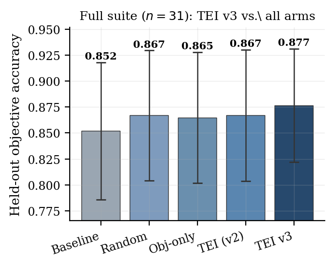
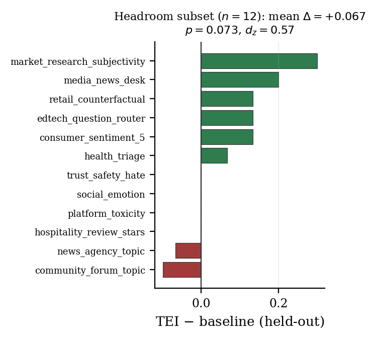

Does Evaluation-Guided Prompt Optimization Beat a Fair Baseline? A Confound-Controlled, Ablated Study of the Target-Evaluate-Improve Loop on 31 Single-Turn Classification Tasks (TEI-Bench)
Evaluation-guided prompt optimization is widely reported to improve LLM systems, but the evidence often relies on in-sample evaluation, single tasks, same-family judges, and no comparison against undirected prompt search. We build TEI-Bench, a confound-controlled, ablated, held-out protocol, and use it to evaluate one popular instantiation -- a multi-dimensional Evaluation-dimensions evaluator (inspired by the Agent GPA framework) feeding a GEPA-style reflective Pareto optimizer (the composition we call TEI) -- across 31 single-turn classification, extraction, and reasoning tasks. The central finding is cautionary. Under a naive label scorer, a pilot showed a large gain (+0.175 accuracy). After we remove the output-format confound with a universal 'FINAL:' answer contract applied identically to every condition, and add a four-arm ablation (baseline, undirected random prompt search, objective-only reflection, full TEI), the gain collapses. Held-out arm means are nearly tied: baseline 0.852, random 0.867, objective-only 0.865, TEI 0.867. TEI does NOT significantly beat the baseline (delta=+0.015, p=0.406, d_z=0.15; sign-test p=0.804; permutation p=0.430); a two one-sided test shows the two are statistically EQUIVALENT within +/-0.05 (p=0.030), though the full-suite test is underpowered (12 of 31 tasks are at ceiling; MDE80=0.050). TEI is indistinguishable from random prompt search (delta=+0.000, p=1.000) and the Evaluation-dimensions signal adds nothing over objective-only reflection (delta=+0.002, p=0.806); on this benchmark TEI behaves like a train-selected random paraphrase. The only positive hint is a headroom subset (n=12, baseline<0.9): delta=+0.067, a medium effect (d_z=0.57) that is suggestive but not significant (p=0.073). We conclude that, within the single-turn classification regime, confound control and an ablation against random search are necessary to make prompt-optimization claims credible. Plan pre-registered (prereg-v2) before the run; all code, data, traces, and optimized prompts are released. High-budget addendum: on the 12 non-saturated tasks at 20 iterations, TEI DOES beat the baseline (+0.078, p=0.034, d_z=0.70) and a non-reflective OPRO-style optimizer (which gains nothing), but still cannot be separated from budget-matched random paraphrase (+0.067, p=0.102). Constructive fix: a redesigned loop (TEI v3) adding validated few-shot demonstrations and an independent confirmation gate DOES significantly beat the baseline on the full suite (+0.025, p=0.024, win/loss/tie=6/0/25, zero regressions) at lower cost -- though still within noise of random search.
Because our central claim is a null, we quantify it rather than reporting only p>0.05.
Sign test (TEI vs baseline): 9 wins / 7 losses / 15 ties, p=0.804.
Paired permutation (sign-flip) test on the mean difference: p=0.430.
Equivalence (TOST, +/-0.05 margin): p=0.030 -> EQUIVALENT (we can rule out a large effect).
Power: 12 of 31 tasks are at ceiling (>=0.999), so the full suite detects only effects >= MDE80=0.050 at 80% power; post-hoc power for the observed effect is 0.13.
TEI v3 — a redesigned loop that works (full 31-task suite)
TEI v3 (redesigned loop: validated few-shot demonstrations + an INDEPENDENT confirmation gate + successive halving + headroom triage, same Target-Evaluate-Improve structure) on the full 31-task suite: held-out accuracy 0.877 vs baseline 0.852.
TEI v3 SIGNIFICANTLY beats the baseline: delta=+0.025 (p=0.024, d_z=0.43), win/loss/tie=6/0/25 -- with ZERO test regressions (the confirmation gate reverts to baseline whenever a candidate is not confirmed on an independent split).
Headroom subset (n=12): delta=+0.064 (p=0.018, d_z=0.80) -- a large, significant gain where improvement is actually possible.
Efficiency: 16 tasks triaged (baseline shipped, no spend) and 23 judge evaluations avoided by successive halving.
Honest caveat: TEI v3 is still NOT significantly better than budget-matched random search (delta=+0.010, p=0.239); the gain is driven by validated in-context demonstrations + do-no-harm selection, not by the evaluation/reflection signal per se.

TEI v3 vs all arms (full suite, y-axis truncated).
On the 12 headroom tasks (baseline<0.9) at a larger budget (20 iterations), arm means are baseline 0.650, random 0.661, objective-only 0.697, OPRO-style 0.650, TEI 0.728.
TEI beats baseline by +0.078 (p=0.034, d_z=0.70) and beats the OPRO-style optimizer by +0.078 (p=0.029), while OPRO moves the baseline by exactly +0.000 (p=1.000) -- reflective optimization helps where a non-reflective one does not.
Honest caveat: TEI is still NOT statistically separable from budget-matched random paraphrase (+0.067, p=0.102); and extra budget barely matters (20- vs 6-iteration TEI: +0.011, p=0.489), so the aggregate null is not optimization-starvation.
Held-out objective by optimization arm (y-axis truncated; whiskers are 95% CIs, which overlap).

Per-task TEI − baseline on the headroom subset (baseline<0.9).Per-agent baseline → TEI (held-out).Public vs. synthetic tasks (y-axis truncated).